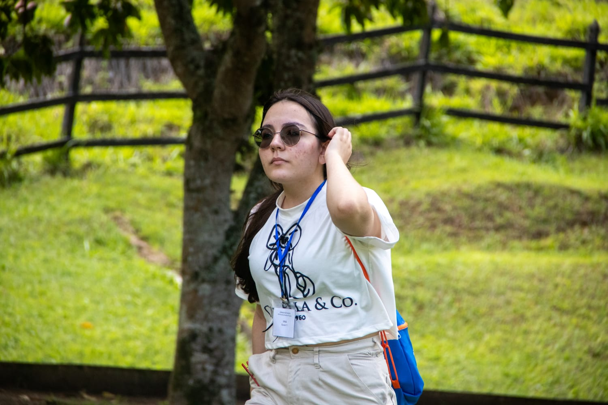

SOBRE MIM
Conheça um pouco da minha trajetória, paixão por tecnologia e conquistas.
Oi! Eu sou a Iana, estudante do Ensino Médio Técnico em Informática na EEEP Jeová Costa Lima. Sou do interior do Ceará e, desde pequena, sempre fui muito curiosa e gostava de entender como as coisas funcionavam. Os jogos fizeram parte da minha infância e, com o tempo, essa curiosidade acabou me aproximando cada vez mais da tecnologia.
Foi no curso técnico que comecei a conhecer melhor esse universo e perceber que realmente queria seguir por esse caminho. Desde então, venho procurando participar de projetos e oportunidades que me permitam aprender na prática e descobrir novas áreas dentro da tecnologia. Já desenvolvi alguns projetos de programação para o curso e também participei de projetos relacionados à área.
Além disso, ao longo da minha trajetória, participei de diferentes olimpíadas científicas, conquistando algumas premiações. Atualmente, fui aprovada no processo seletivo da Sprint Behring Academy, onde, durante dois meses, vou aprofundar meus conhecimentos em programação e tecnologia.
No futuro, quero continuar minha trajetória na área de tecnologia, buscando uma formação superior que me permita aprofundar meus conhecimentos e me preparar para o mercado. Tenho interesse em seguir por alguma área da Computação ou da Engenharia, e pretendo conhecer diferentes possibilidades ao longo dessa caminhada até encontrar a área com a qual mais me identifico.